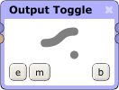
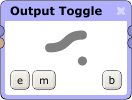

Output Toggle Processor

The Output Toggle processor takes a single input and lets you route it to one of two outputs. When switching between the two outputs, a very short ramp is applied to ensure no clicking occurs.

The Output Toggle processor takes a single input and lets you route it to one of two outputs. When switching between the two outputs, a very short ramp is applied to ensure no clicking occurs.